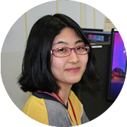

活躍する卒業生＞ 矢野祐貴子さん

矢野祐貴子さん
ポリゴンマジック株式会社
開発本部 開発支援室
現在は、どのようなお仕事をされていますか？
CG映像制作の技術的な支援を行う「開発支援室」部署に所属し、デザイナーの環境整備や、技術検証、作業効率化のためのツール制作を行っています。プログラムを書けるデザイナー、と言えば分かりやすいかもしれません。
一番多い業務が、複雑な作業を自動化する、ツール制作の依頼です。
現場のデザイナーとのやり取りで、実際に搭載する機能を模索するのですが、完成後に、「作業短縮になるし、便利だよ！」と、報告をいただけると、非常にやりがいを感じますね。
大学時代はどんなことを考えて、 どんなことに力を入れて勉強をしていましたか？
大学時代は３DCGのデザイナーになりたくて、ただひたすらに映像作品を作る毎
日でした。パソコン室に住んでる、なんて言われていたりも。
何でもやりたい性格だったので、造形系やデザイン、簡単なプログラムも書い
たり…、子供の頃から、そういった類いの遊びはしていたので、その延長線上ですね。
結果的にあらゆるソフトや技法に触れることになり、幅広い知識が求められる業務の良い下地作りになったかと思います。
女子美の後輩達や受験生に伝えたいメッセージをお聞かせ下さい。
こうなりたい！という目標を大きく持ってみましょう。
学生には遥か遠い存在の、日本や海外の技術や作品たちも、実際それを目にすれば、なんて事は無い、一人一人の人間が地道に作っているのです。
憧れだけで済まさずに、コツコツと手を動かしていけば、少しづつでもその目標に近づいていけると思います。